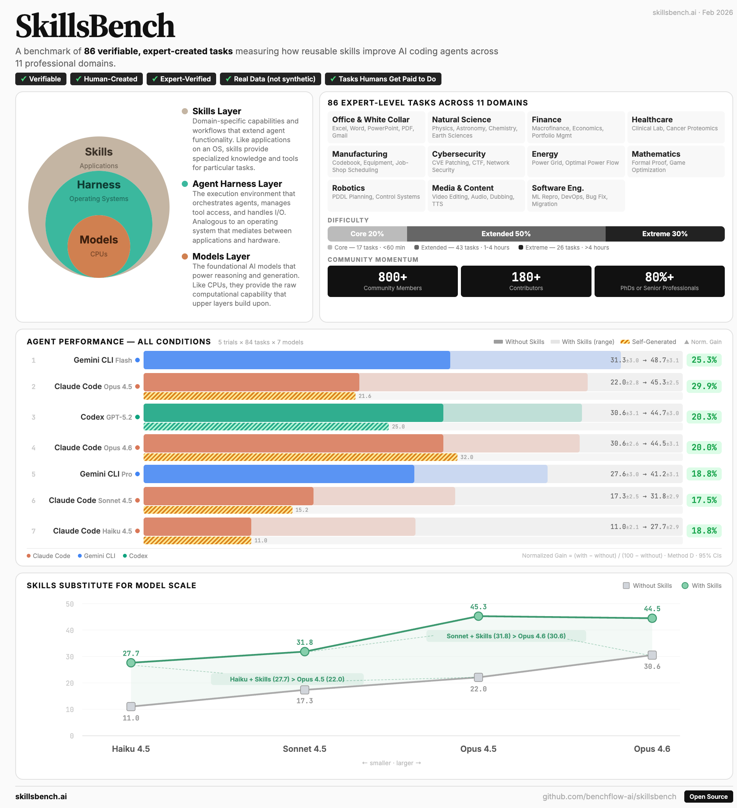

arXiv 2026 · Agent Skills · 1.1k starsSkillsBench: Benchmarking how well agent skills work across diverse tasks
★ 1.1k GitHub stars86 tasks11 domains7,308 trajectories
A benchmark for evaluating whether agent skills actually work across diverse tasks, separating skill quality from an agent’s ability to discover and use the right skill.